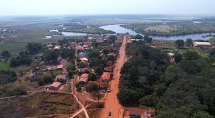

Gastronomia e cultura
Prove pratos locais e visite mercados tradicionais para conhecer a culinária da região.
Sobre a região
Bafatá é um importante centro regional no interior leste da Guiné-Bissau, conhecido pelos mercados animados, pela agricultura (milho, caju e mandioca) e pela diversidade étnica. A cidade serve como um polo comercial para comunidades rurais vizinhas e mantém festivais culturais que celebram músicas e danças locais.
Voltar ao Início